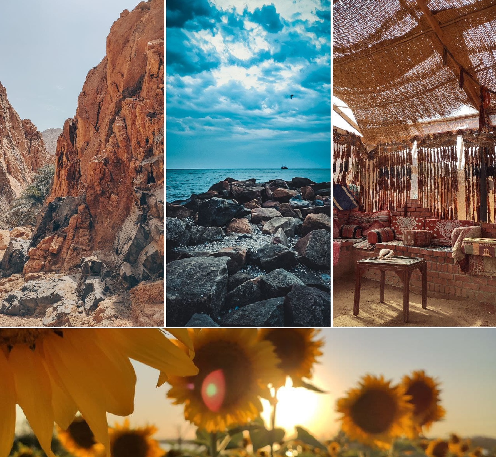
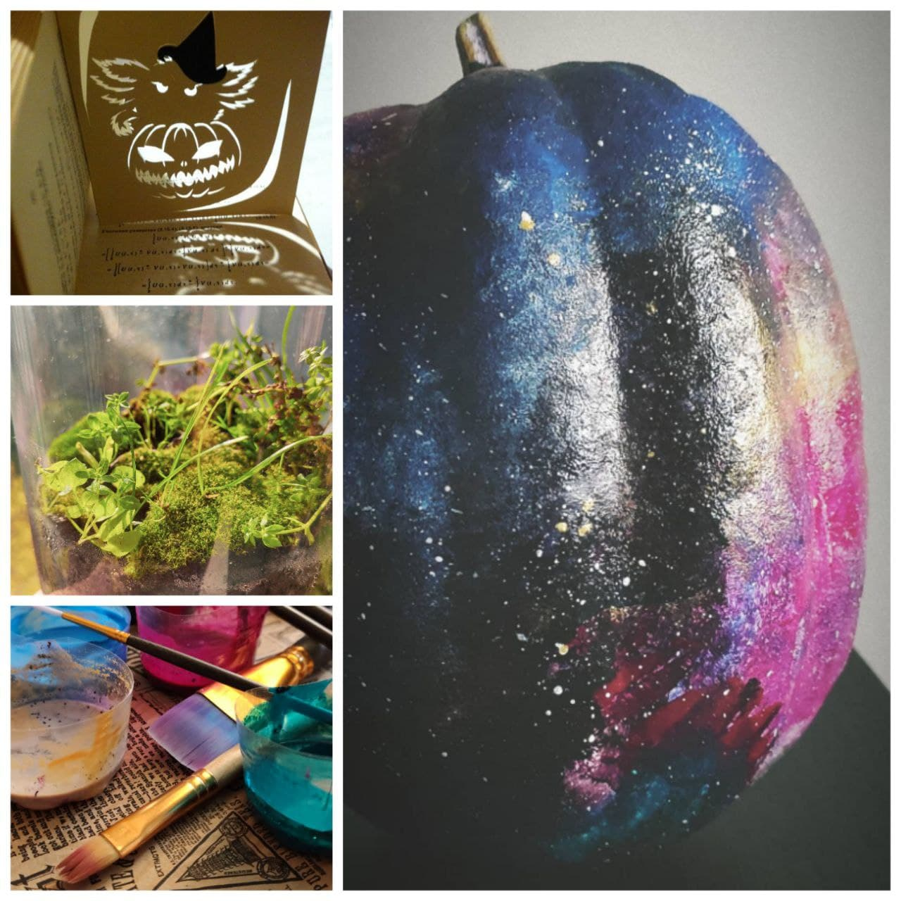
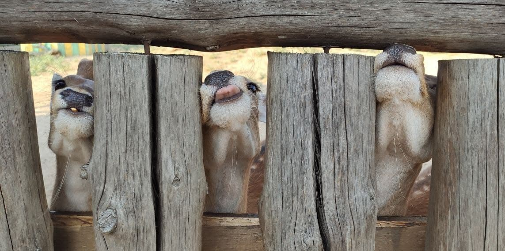
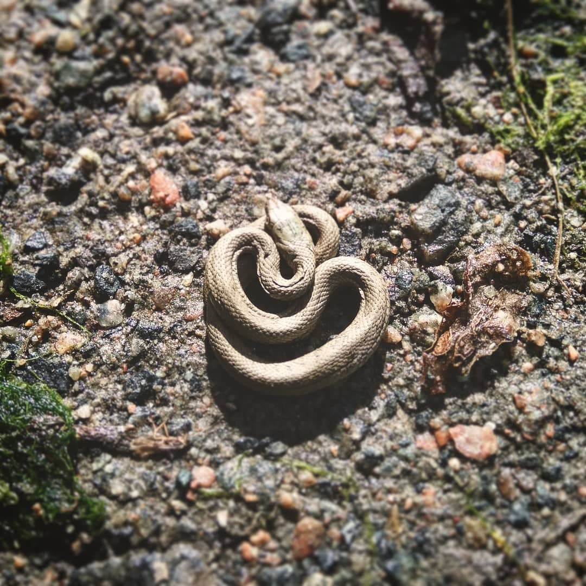

 Очень часто в поисках красивых мест приходится выезжать за пределы города или даже посещать другие страны, изнурять себя жарой или холодом, проходить долгие лесные тропы и болота, бредя на шум водопада

Но можно и самому попробовать создать что-то интересное своими руками.
В сети можно бесконечно долго черпать вдохновение, рассматривая
фото чужих творений.
Особенно широко известен своими закромами идей интернет-сервис
Pinterest
 Иногда просто везёт оказаться в "нужное" время в "нужном" месте
 А иногда ты замечаешь нечто новое, просто взглянув себе под ноги
| Страна | Город, место |
|---|---|
| Украина | Херсонская обл., Чаплинский р-н, оз.Лемурийское |
| Франция | г.Нормандия, остров-крепость Мон-Сен-Мишель |
| Япония, о.Хонсю, Дзао Кицунэ-мура — «лисья деревня» | |
| Испания |
|
| г.Ронда, Пуэнте-Нуэво (Новый Мост) над ущельем Эль-Тахо | |
| Исландия | дол. Йокулдалур (Jökuldalur), Базальтовый каньон Студлагил (Stuðlagil Canyon) |
{kind=link}
{kind=link}
{kind=link}
{kind=link}
{kind=link}